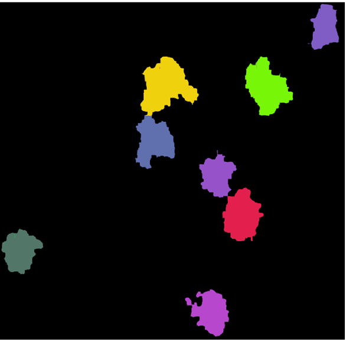
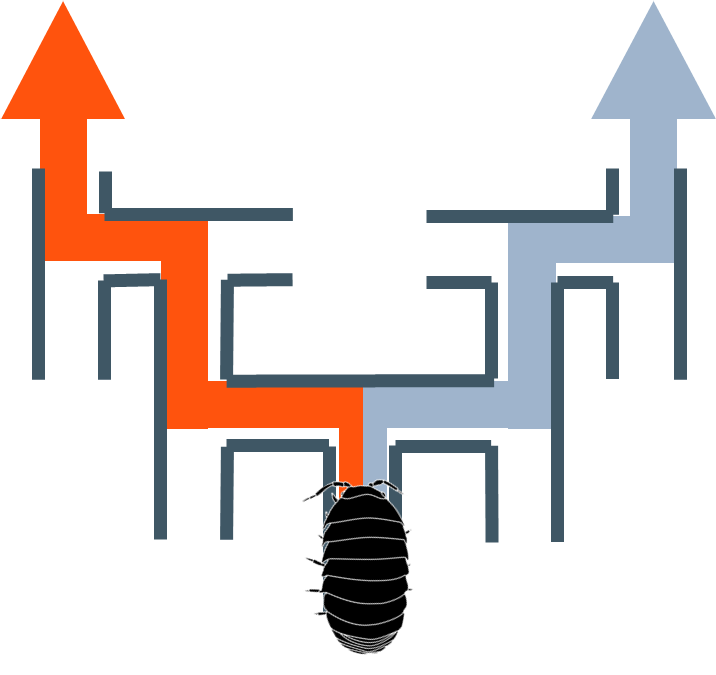

林 靖人 / Yasuhito Hayashi
博士(理学)/専門: 生物海洋学
Ph.D. in Science
(Biological Oceanography)
Research Focus
News
Publications
-

Frontiers in Marine Science 10, 1167169.
-
Journal of Oceanography 76, 317-326.
-

Tsukuba J Biol 12, TJB201307YH.
Presentations
Projects
-
Event based frequency analysis especially for biological data
Grants
講演
Peer Review Experiences
- Frontiers in Marine Science: 1